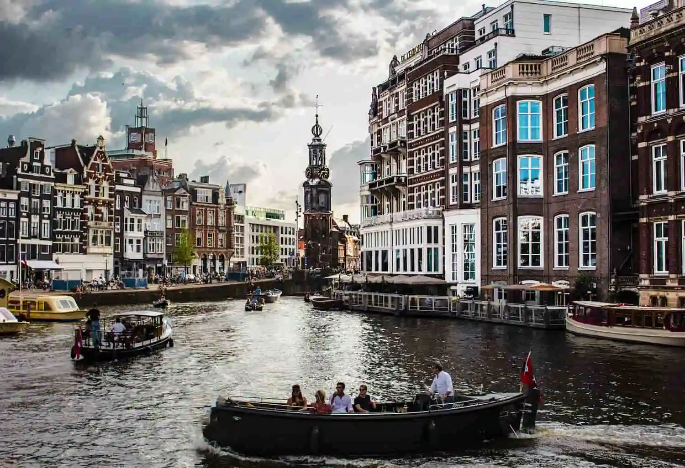
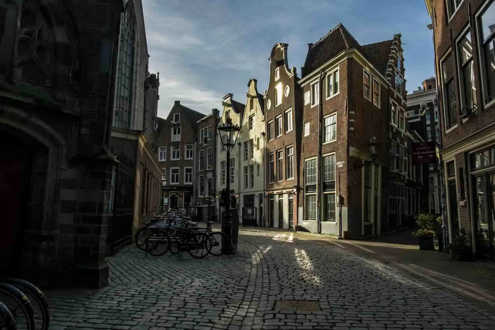
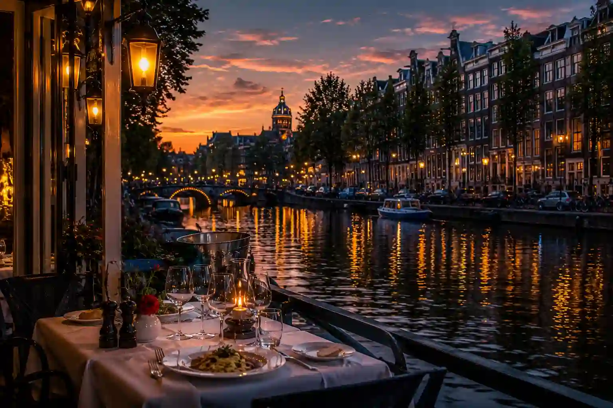
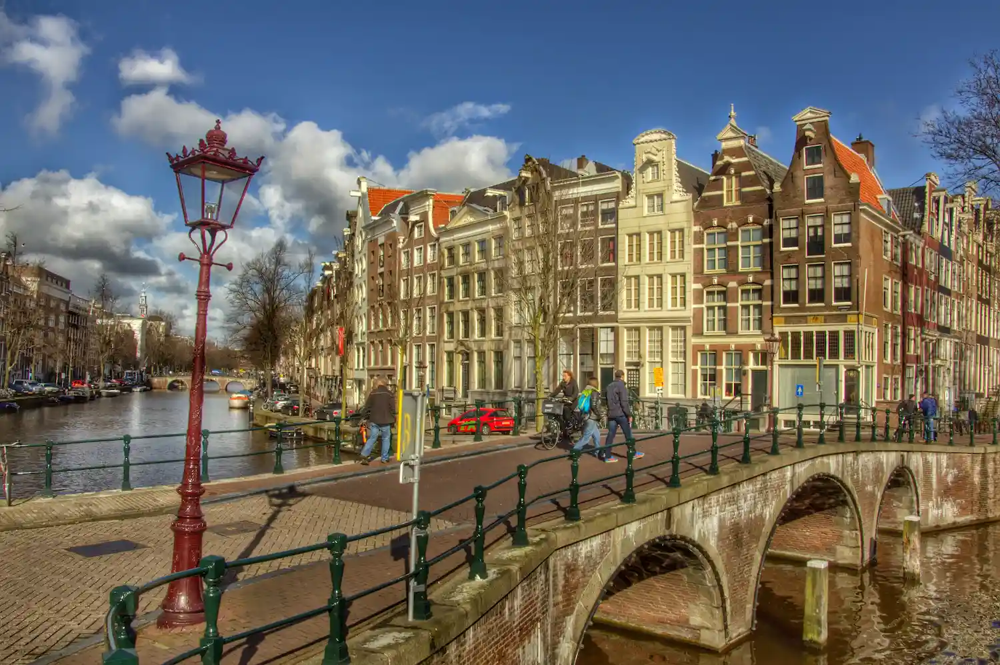

Amsterdam
Ride the canals
Explore Amsterdam through its illuminated canals, cycling culture, urban coffee spots and iconic neighborhoods.
Canals • Cycling • Jordaan • Brunch • Rijksmuseum
Cycling remains the fastest and most authentic way to explore the city.
Amsterdam’s canals create a unique atmosphere both day and night.
From Jordaan to De Pijp, discover the city's best urban cafés.
The Van Gogh Museum, Rijksmuseum and historic districts are must-see highlights.

Beyond its famous attractions, certain experiences reveal the true soul of Amsterdam: its canals at sunset, its historic neighborhoods, its traditional cafés and the unique atmosphere that has defined the city for centuries.

Cycling is deeply woven into Amsterdam's identity. Riding along historic canals, crossing iconic bridges and exploring neighborhoods such as Jordaan and De Pijp offers one of the most authentic ways to experience the city. A must-do activity to understand the local Dutch lifestyle.
🚲 Book the Bike Tour →
As the sun begins to set and historic facades reflect on the water, Amsterdam reveals one of its most beautiful atmospheres. Between illuminated bridges, houseboats and Golden Age architecture, a sunset cruise offers an unforgettable perspective of the city.
🌅 Book the Cruise →
Listed as a UNESCO World Heritage Site, Amsterdam's canals tell the story of the city across more than four centuries. On board a traditional boat, admire Golden Age houses, iconic bridges and elegant waterfront facades lining the Netherlands' most famous waterways.
🚤 Book the Cruise →
Behind discreet doors lie historic courtyards, peaceful gardens, hidden passageways and unusual places that most visitors never discover. A unique way to explore a more intimate and authentic side of Amsterdam.
🌷 Discover Hidden Places →
These traditional Dutch cafés are an essential part of Amsterdam's identity. With their dark wood interiors, warm lighting and welcoming atmosphere, they offer one of the most authentic ways to experience local culture and everyday life.
🍺 Discover a Brown Café →With its bicycles, trams, free ferries and extensive cycling infrastructure, Amsterdam offers one of the most enjoyable urban transport networks in Europe. Most neighborhoods can be explored easily without a car.
The GVB network provides quick access to all of Amsterdam's main districts. The ferries crossing the IJ toward Amsterdam Noord are free and offer a genuine local experience.
View GVB Tickets →With hundreds of kilometers of dedicated cycling paths, biking remains the most authentic way to discover Amsterdam. An essential experience for exploring the canals, parks and historic neighborhoods.
Explore Amsterdam by Bike →The I Amsterdam City Card includes unlimited access to GVB trams, metro lines, buses and ferries, as well as entry to many of the city's museums and attractions. A practical way to explore Amsterdam while saving money.
Discover the City Card →From Amsterdam Centraal Station, GVB ferries cross the IJ free of charge. The Buiksloterweg route connects you to A'DAM Lookout and the EYE Film Museum in less than five minutes, while the NDSM route provides easy access to the creative district, the STRAAT Museum and the redeveloped former docklands.
📍 Centraal → A'DAM Lookout • EYE Film Museum • NDSM
Amsterdam's most charming neighborhood. Peaceful canals, local cafés, independent boutiques and an authentic atmosphere make it an excellent choice for a first visit.
The historic heart of the city. Perfect for quick access to the main attractions, iconic canals and the lively atmosphere of central Amsterdam.
A vibrant and cosmopolitan district known for its restaurants, trendy cafés and the famous Albert Cuyp Market. Ideal for discovering a more local side of Amsterdam.
Elegant and residential, this district is home to the Rijksmuseum, the Van Gogh Museum and Vondelpark. A reliable choice for a peaceful and comfortable stay.
The perfect area for enjoying Amsterdam's nightlife. Bars, concert venues, restaurants and lively streets make it a great option for travelers who enjoy going out in the evening.
Accessible by free ferry from Central Station, this modern district attracts visitors with its contemporary architecture, cultural venues and creative atmosphere.
Whether you're looking for a canal-side hotel in Jordaan, an elegant address in Oud-Zuid or a stay in the heart of the historic center, Amsterdam offers accommodations for every travel style.
From historic brown cafés and food markets to canal-side restaurants, Amsterdam offers a culinary scene that is as diverse as it is welcoming.
Amsterdam's famous Brown Cafés are an essential part of the city's identity. These traditional establishments, with their dark wood interiors and timeless charm, offer a warm and authentic atmosphere loved by locals and visitors alike.
Discover →
One of the city's most popular spots for discovering Dutch and international street food in a lively atmosphere. A great place to sample several specialties under one roof.
Explore Foodhallen →
Amsterdam's most famous market. The perfect place to enjoy freshly made stroopwafels, Dutch cheeses and many other local specialties.
View the Market →
Located inside a former greenhouse, De Kas is one of Amsterdam's most iconic restaurants. A unique dining experience where part of the ingredients are grown directly on site.
Read Reviews →
Some of the city's finest restaurants offer exceptional views over Amsterdam's historic canals. An especially enjoyable experience at sunset or during the evening.
Find a Restaurant →Between historic canals, Dutch Golden Age masterpieces and iconic landmarks rich in history, some experiences are essential for a first trip to Amsterdam.

Home to the world's largest collection dedicated to Vincent van Gogh, this must-visit museum allows visitors to explore the artist's evolution through his most famous paintings, drawings and personal letters.
🎨 Book Your Visit →
The national museum of the Netherlands showcases some of the greatest masterpieces in Dutch art history. Admire iconic works by Rembrandt, Vermeer and Frans Hals in one of Europe's most prestigious museums.
🏛️ Book Your Visit →
A deeply moving memorial that tells the story of Anne Frank and her family during World War II. As tickets sell out quickly, booking several weeks in advance is highly recommended.
📖 Plan Your Visit →
Located inside the brand's original historic brewery, the Heineken Experience offers an immersive journey through the story of one of the world's most famous beers. Interactive exhibits, behind-the-scenes stories and tastings make it one of Amsterdam's most popular attractions.
🍺 Book Your Visit →
From Jordaan and De Pijp to Amsterdam Noord, each district reveals a different side of the Dutch capital and deserves to be explored.
Explore →From football and cycling to major sporting events, sports play an important role in Dutch culture. Attending a match or discovering these traditions offers a different perspective on Amsterdam.

The most famous football club in the Netherlands, Ajax fills the Johan Cruyff Arena with passion throughout the season. Attending a match is a great way to experience one of Europe's most historic football institutions.
Attend a Match →With hundreds of kilometers of cycling paths and thousands of bikes on the streets, Amsterdam is one of the world's most iconic cycling cities.
Explore Amsterdam by Bike →Held every autumn, the Amsterdam Marathon attracts runners from around the world and passes through several iconic districts before finishing inside the historic Olympic Stadium.
Register for the Marathon →Home to Ajax, the Johan Cruyff Arena is one of the most famous stadiums in Europe. Whether you attend a match or take a behind-the-scenes tour, it offers a fascinating insight into Dutch football history.
Visit the Johan Cruyff Arena →Thanks to the Netherlands' excellent rail network, several iconic cities and attractions can be reached in less than an hour from Amsterdam. Perfect for adding memorable day trips to your journey.
Discover the famous windmills of Zaanse Schans, the traditional houses of Edam, the charming harbor of Volendam and the historic island of Marken on one of the most popular excursions from Amsterdam.
Book the Excursion →Open during spring, this world-famous flower park welcomes millions of tulips and offers one of the most colorful displays in the Netherlands. A must-see excursion to experience the country's iconic flower fields.
View the Excursion →Just a few minutes from Amsterdam, Haarlem charms visitors with its historic center, peaceful canals and authentically Dutch atmosphere. A romantic canal cruise offers a wonderful way to admire its historic landmarks, bridges and elegant architecture.
Discover Haarlem from the Canals →Known for its unique canals, waterside terraces and vibrant student atmosphere, Utrecht is often considered one of the most pleasant cities in the Netherlands. Just outside the city, De Haar Castle offers one of the region's most impressive historic visits.
Visit De Haar Castle →Contemporary architecture, cube houses and a modern skyline: Rotterdam offers a striking contrast to Amsterdam's historic charm. Explore the city aboard an unusual amphibious bus that drives through the streets before plunging directly into the harbor.
Ride the Amphibious Bus →The political capital of the Netherlands combines royal palaces, prestigious museums and access to the beaches of Scheveningen. From the SkyView Ferris wheel, enjoy spectacular views over the Dutch coastline.
Ride the SkyView →Dutch is the official language, but the vast majority of locals also speak excellent English.
The Netherlands uses the euro (€). Card payments are accepted almost everywhere, even for small amounts.
Cycling rules in Amsterdam. Pay close attention to bike lanes, which are often very busy with local cyclists.
Two to four days are enough to explore the main neighborhoods, museums, canals and iconic experiences of the city.
Spring, especially between April and May, is particularly popular thanks to the tulip season and pleasant temperatures.
Amsterdam is one of the most expensive cities in the Netherlands. A comfortable budget usually ranges from €150 to €300 per day, depending on your travel style.
Bike lanes are everywhere and often very busy. Crossing without looking or walking on a cycling path can quickly create dangerous situations.
The Van Gogh Museum, the Anne Frank House and some popular activities often sell out several days, or even several weeks, in advance.
Amsterdam is easy to explore on foot or by bike. Staying too far from the center can reduce the time you spend enjoying the sights and the city's unique atmosphere.
Many travelers only discover the city center, even though neighborhoods such as De Pijp, Jordaan and Amsterdam Noord are among the most enjoyable areas to explore.
In the Netherlands, a coffee shop refers to a licensed establishment that sells cannabis. To simply drink a coffee, head to a traditional café or a Brown Café.
Two to four days are enough to discover the main neighborhoods, must-see museums, historic canals and the unique atmosphere of the Dutch capital.
Jordaan is often considered the most pleasant area for a first stay thanks to its picturesque canals, authentic cafés and central location.
Amsterdam is one of the most expensive cities in the Netherlands. Accommodation is usually the largest expense, especially during weekends and the high season.
Spring, particularly between April and May, is highly popular thanks to blooming tulips and pleasant temperatures. Autumn also offers a wonderful atmosphere along the city's canals.
Yes. The Van Gogh Museum, the Anne Frank House, many canal cruises and the city's most popular attractions often sell out several days or even weeks in advance.